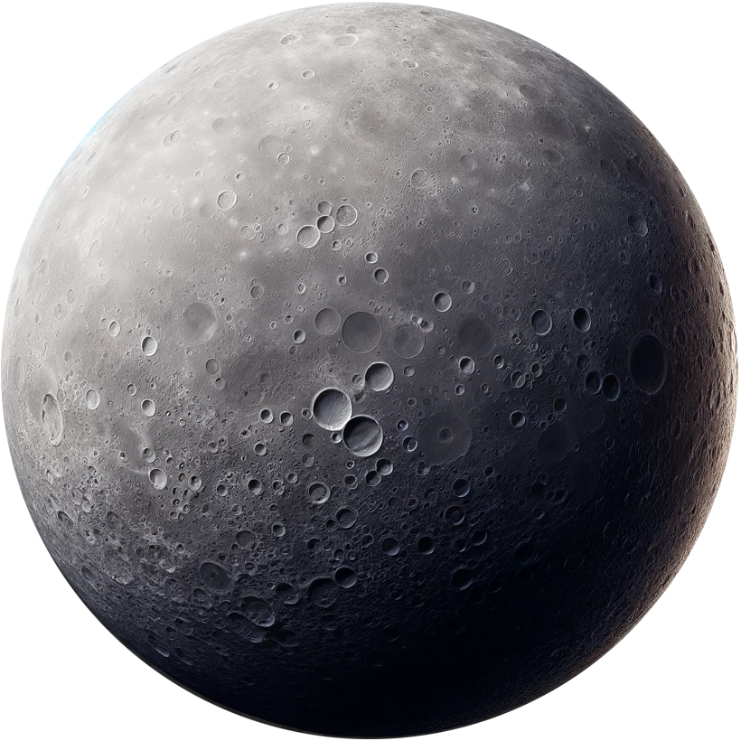
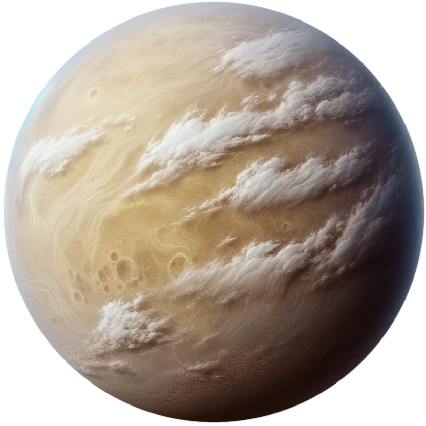
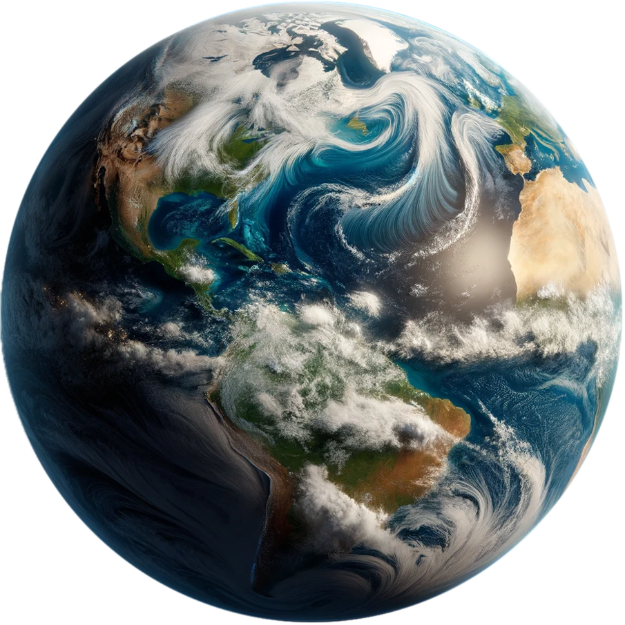
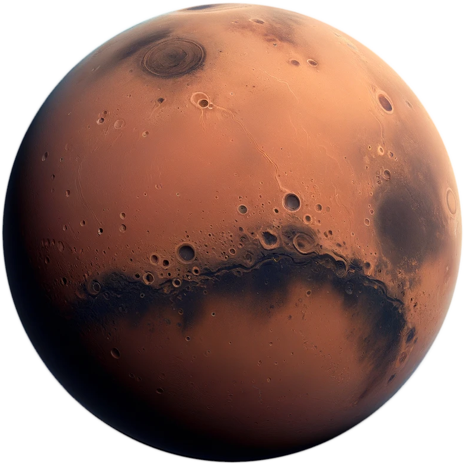
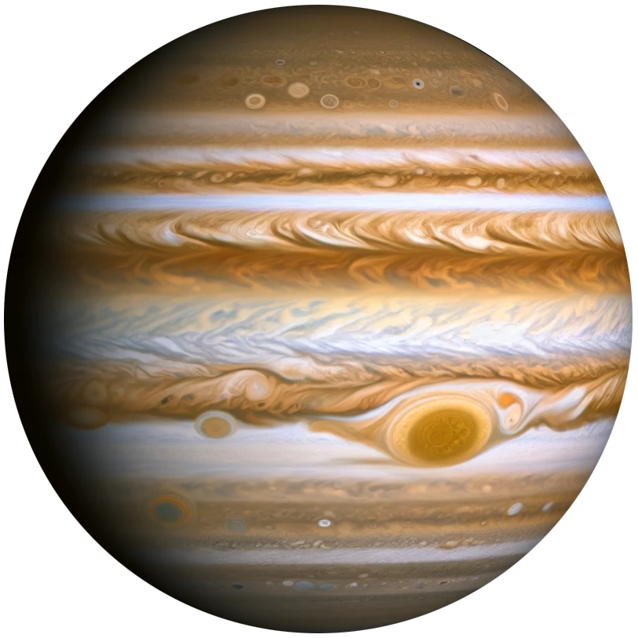
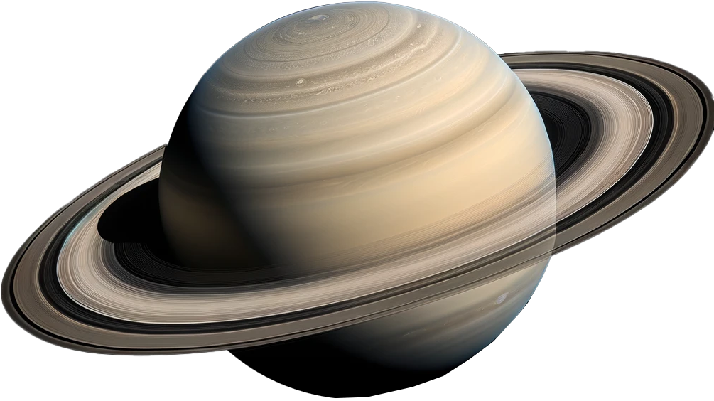
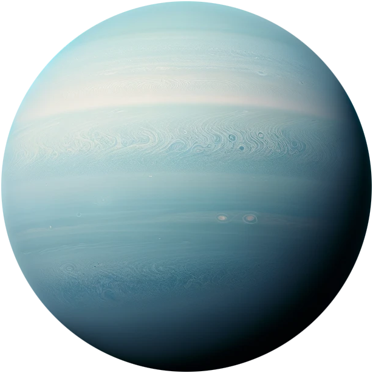
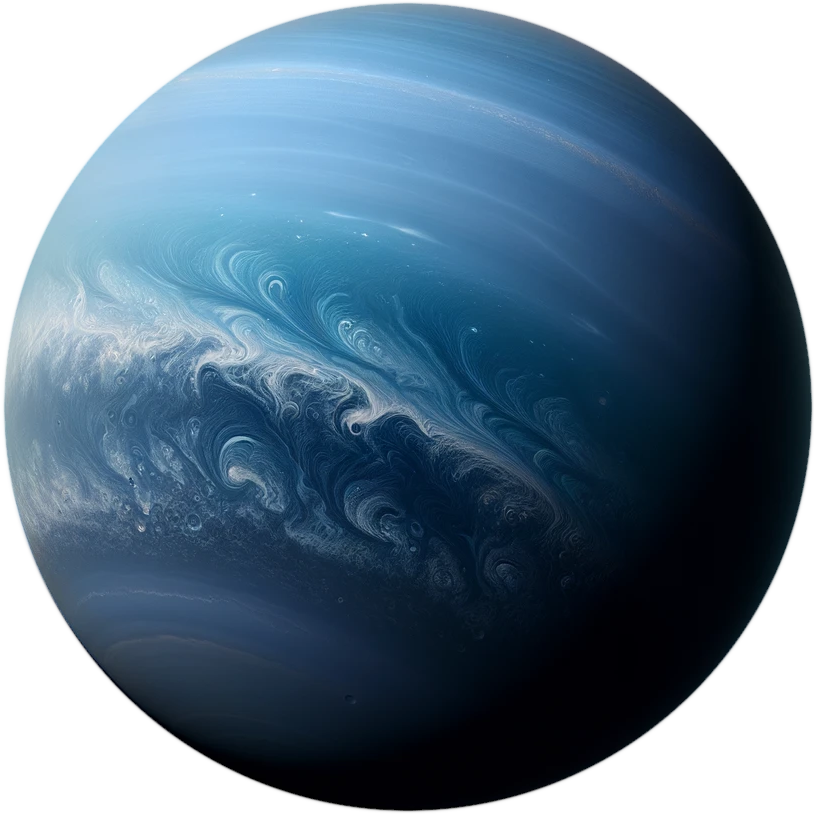

Mercury
Mercury is the smallest planet in the Solar System and the closest to the Sun. Its orbit
around the Sun takes 87.97 Earth days, the shortest of all the Sun's planets. It is named
after the Roman god Mercurius (Mercury), god of commerce, messenger of the gods, and
mediator between gods and mortals.

Venus
Venus is the second planet from the Sun. It is named after the Roman goddess of love and
beauty. As the brightest natural object in Earth's night sky after the Moon, Venus can cast
shadows and can be, on rare occasion, visible to the naked eye in broad daylight.

Earth
Earth is the third planet from the Sun and the only astronomical object known to harbor and
support life. About 29.2% of Earth's surface is land consisting of continents and islands.
The remaining 70.8% is covered with water, mostly by oceans, seas, gulfs, and other
salt-water
bodies, but also by lakes, rivers, and other freshwater, which together constitute the
hydrosphere.

Mars
Mars is the fourth planet from the Sun and the second-smallest planet in the Solar System,
being larger than only Mercury. In English, Mars carries the name of the Roman god of war
and
is often referred to as the "Red Planet".

Jupiter
Jupiter is the fifth planet from the Sun and the largest in the Solar System. It is a
gas-giant planet and therefore does not have a solid surface. It is two and a half times
the mass of all the other planets in the Solar System combined.

Saturn
Saturn is the sixth planet from the Sun and the second-largest in the Solar System, after
Jupiter. It is a gas giant with an average radius about nine times that of Earth. It only
has one-eighth the average density of Earth; however, with its larger volume, Saturn is
over 95 times more massive.

Uranus
Uranus is the seventh planet from the Sun. It has the third-largest planetary radius and
fourth-largest planetary mass in the Solar System. Uranus is similar in composition to
Neptune, and both have bulk chemical compositions which differ from that of the larger gas
giants Jupiter and Saturn.

Neptune
Neptune is the eighth and farthest known Solar planet from the Sun. In the Solar System, it
is the fourth-largest planet by diameter, the third-most-massive planet, and the densest
giant planet. Neptune is 17 times the mass of Earth, slightly more massive than its
near-twin
Uranus.